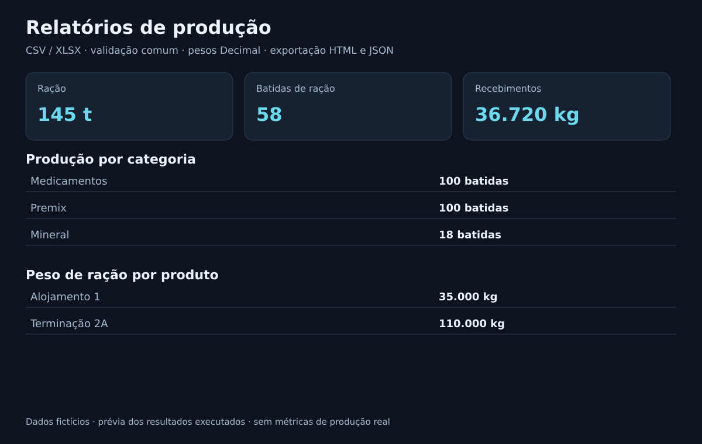
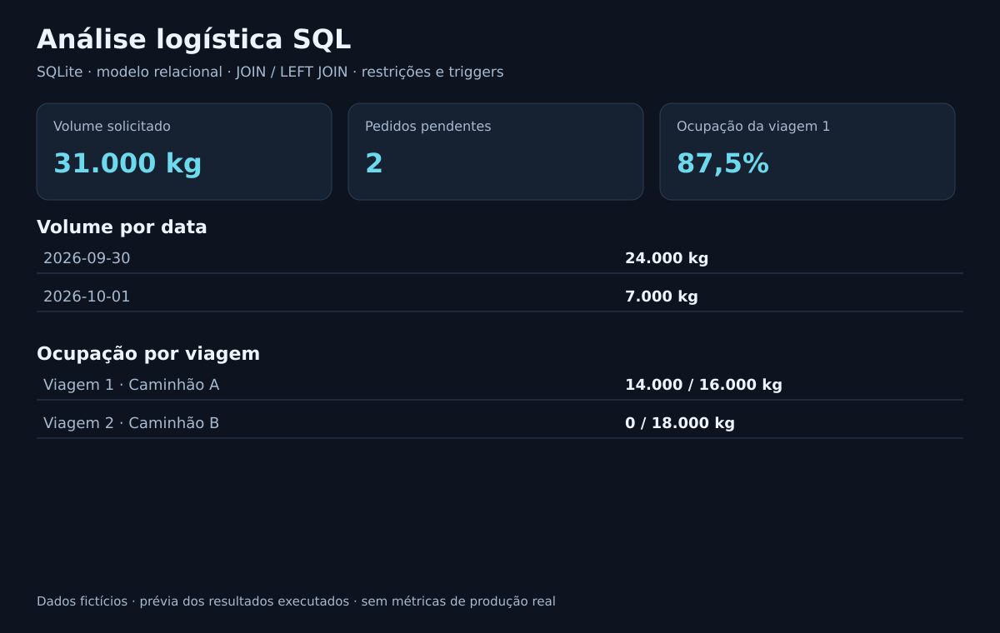
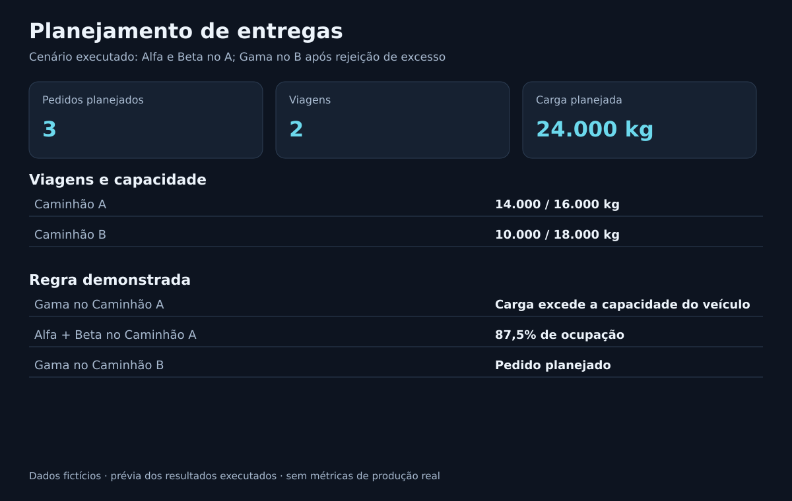

Relatórios de produção
Importação CSV/XLSX, validação de registros e consolidação por período. Saída HTML imprimível e JSON.
Python · Decimal · CSV/XLSX · 28 testes
Código e demonstração ↗DIOGO LAZZAROTTO / PORTFÓLIO TÉCNICO
Com foco em desenvolvimento de software e análise de dados, conecto tecnologia à operação. Meu foco é conectar desenvolvimento, produção e logística por meio de soluções simples, documentadas e verificáveis.
Demonstrações com dados fictícios

Importação CSV/XLSX, validação de registros e consolidação por período. Saída HTML imprimível e JSON.
Python · Decimal · CSV/XLSX · 28 testes
Código e demonstração ↗
Modelo relacional com integridade, consultas de volume, pendências e ocupação dos veículos.
SQLite · DER · Joins · Triggers
Modelo e consultas ↗
Pedidos, viagens e status em uma interface local. Regras transacionais impedem excesso de capacidade.
Python · SQLite · HTML/CSS/JS
Código e instruções ↗3 projetos exibidos
Prévias dos resultados geradas a partir dos exemplos fictícios.
COMO ESTRUTURO AS SOLUÇÕES
Sem alegação de uso em produção ou ganhos operacionais medidos.
PRÓXIMO PASSO
Conheça o código, os exemplos e a evolução dos projetos.